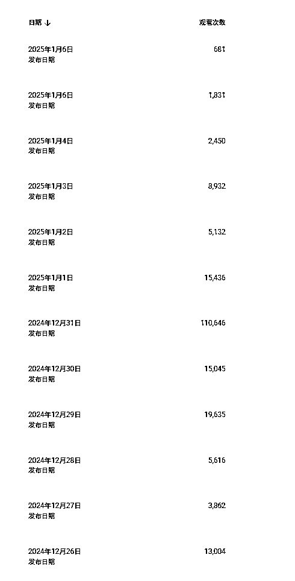
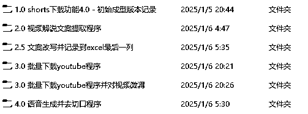
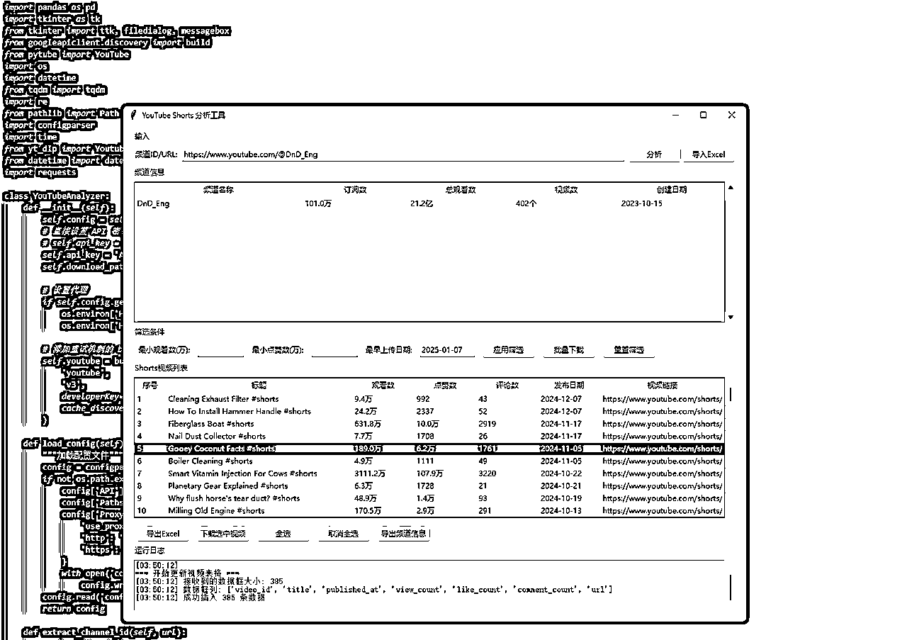
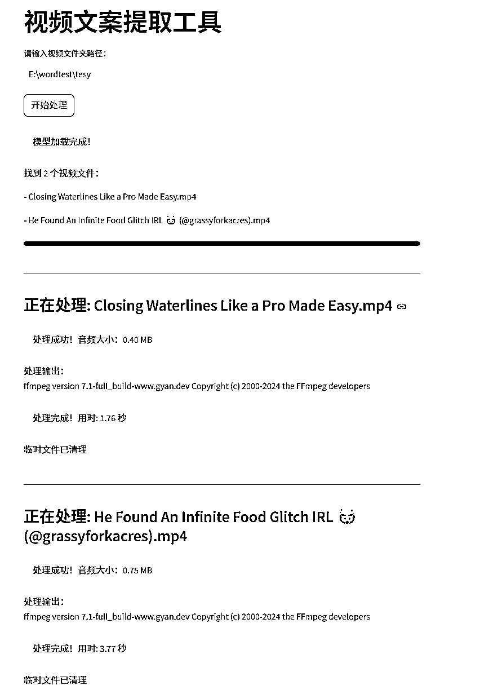
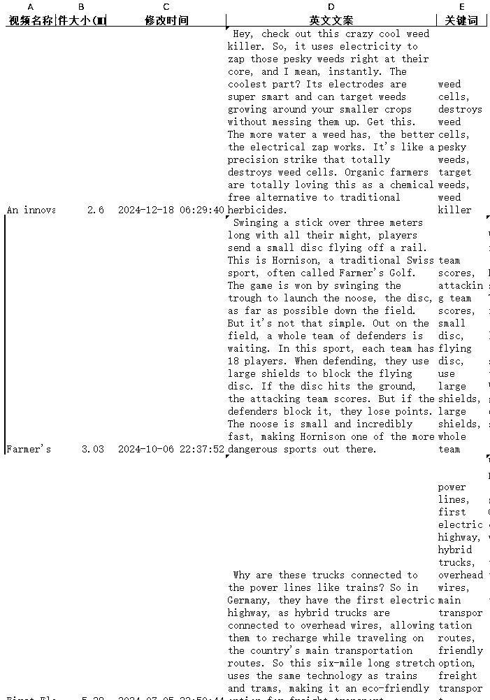
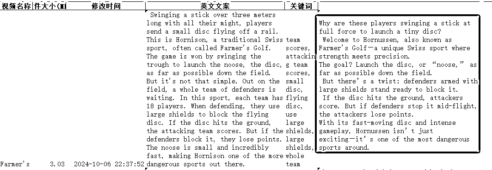
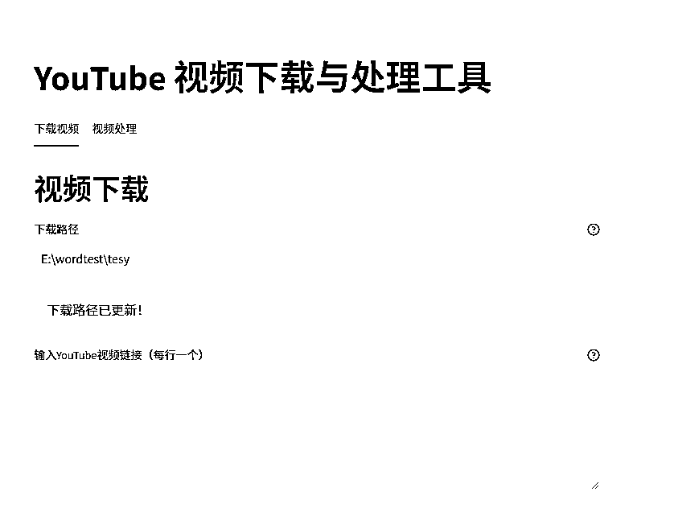
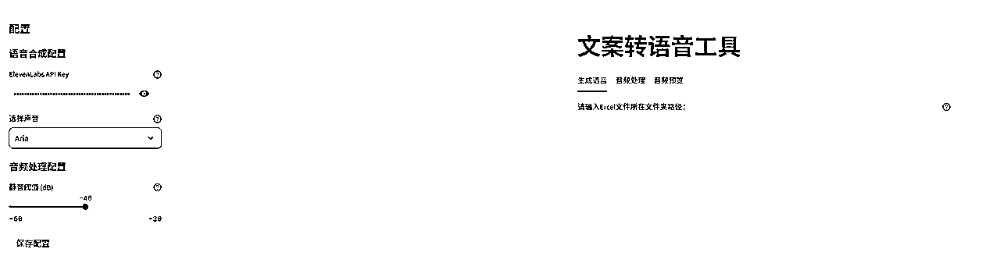
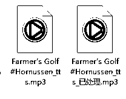

来源：https://e0kfxhrvey2.feishu.cn/docx/YDTcdbwJhobdBWxNCWIcztSlntg
大家好，写一下这几天做Youtube Shorts的一些情况分享给大家，可能谈不上经验，因为连YPP开通都远着。
先说基本情况：
纯新手，没有做过YouTube，没有用过cursor。
账号1：发了11条视频，累积观看差不多20w，订阅数177，最高的一条视频播放刚跑到11w。
账号2：发了6条视频，累积观看3.5w左右，订阅数20，有一个0播放，这个账号数据明显不如第一个账号，不知道是因为养号问题还是内容问题还是账号本身抽奖问题。
本来刚开始想做这个项目是因为看到亦仁的推荐，这是一个长期项目，并且既然大佬推荐，必然项目本身是不会存在问题，而且未来AI一定是巨大的风口和机会，是打算做AI内容的Shorts的。
但是后面在航海中看教练的分享以及把所有圈友分享的最近关于Youtube Shorts的一些经验文章都看了，最后还是定了做科普类解说，原因：
1.自身创造力有限，有自知之明，AI类起量快，但是同质化卷的也快，自认没有这么大的创造天赋，并且整个过程涉及较多的抽卡工作，对于我这样的新手前期肯定要花很多时间，而大佬说这是长期的项目，并且短期大概率难以开通YPP，所以对于我来说可能选择AI类的内容更难以长期坚持。
2.看完了所有文章提到过的赛道，科普类的是对于我来说相对感兴趣，为后面自己的长期坚持减少阻力，同时看了老马教练的分享，感觉流程非常清晰，就选择做这个。
1个老帐号自己用来看视频的。
1个新开的账号，新开的账号养了两三天然后因为迟迟没有下场，静置过一段时间，可能十几天。
因为自知之明，两个账号都发科普解说，避免时间占用太多，被自己的人性弱点扼杀在摇篮里。

刚开始确实打开平台门都找不到。
所以我先用教练分享的内容里面找对标账号，然后到平台里面搜，在里面点赞，订阅。
后面首页出现解说类的视频都会点赞，没有订阅过的就点订阅，逐渐的就每次打开首页都会有相关的视频推荐。
做视频就是按照老马的方法进行制作，直接抄爆款视频，进行混剪。
基本流程：
找爆款科普解说视频
就这样手工剪了10天左右，两个账户一共剪了15个视频，能够明显感受自己的热情逐渐消退，每次剪视频都意味着一块不小的时间的失去，甚至常常看到一些播放量会有点灰心，看到开通YPP的进度更是当头一棒。
感觉不太对，需要想办法帮助自己在未来长期更加庞大的无反馈或者负反馈中坚持下来。
在过去的10天执行动作中，明显感觉到了很多环节因为存在大量重复劳动、且受限工具的效率， 再次做这部分工作时感到了一些抵触感，此时借助外力显得非常迫切了。
打开了最近的cursor航海手册，按照手册下载了cursor，开始了我的一天一夜之旅。
下载好了之后直接开始对话写工具。
详细的过程已经没有了，因为做出来都是比较简单且简陋的功能，中间还会有很多不尽如人意的小问题，但是初期能用就行，后面再根据需要优化吧。
我就直接截图程序大概的功能和界面给大家。

刚开始本来想直接在一个界面里面写尽可能多的功能，这样用起来就方便多了，也轻松多了。
后来发现cursor在复杂功能编写下还是没那么轻松，容易在写新的功能的时候，改掉了原来已经完善的功能，也容易在遇到问题时陷入局部困境。
当然主要还是因为自身水平有限，技巧不够，且花的时间不够。
所以就写了4个小功能，最后给了序号方便我做视频时候不会乱，并且有一定的流程提示效果，比如2.5的那个文件夹就是空的，因为这一步需要我这个牛马去手工操作。
每个文件夹里面就是代码文件加一个启动程序。
除了第一个程序用的是python的程序界面写的，类似pyqt这种，后面发现运行起来卡，写的也慢。
后面的所有都是网页形式，一个S开头的什么库，可以直接问cursor，它知道的，运行非常快，cursor写的也很快。

在写这个程序的过程中，也就是测试并完善功能的过程中，也刚好积累了一些爆款视频，刚好可以用于后面的视频制作，减少了每天去刷Shorts、找爆款的过程和时间消耗。
以后只需要在youtube凭借闲暇时间逛街，收集对标账号就可以。
后续打算用这个程序的频道信息获取功能，去收集更多的账号信息，进行数据分析，甚至进行收益分析，给自己一点坚持的信心。

因为之前是用的飞书妙记，每次都需要我去打开飞书，然后在里面找到飞书妙记，然后上传视频又需要时间，有时候没有提前上传，而是找完素材之后才上传就要干等一会，有点烦人了。
用这个就可以继第一个程序批量下载的爆款视频，直接批量处理了，提取这些视频的文案，直接导出一个excel表格，后面做视频在表格里面获取文案就可以。

第三个程序之前先插入一个人工：
我需要把文案一个一个复制到GPT对话，让他帮我改写，然后复制到excel的下一列，因为没有付费，所以不好用API的方式自动化处理。

之前用的是免费的youtube下载网页，需要一个一个链接复制过去下载，并且有时候还需要点几下跳转页面才能下载，批量下载的哼哼猫又要付费，我还穷。
所以直接自己写了一个批量下载工具。

在找素材的过程中把合适的素材网页地址复制上去，找到足够数量之后直接进行统一下载。
不过这有个问题就是下载速度比较慢，好几个视频的话就需要几分钟，这个时间可以去划分音频语句段落。
其实划分语句段落也是可以用cursor写的，但是最后出来的效果是分几个音频文件，不是很喜欢，就没有完成这个工作，现在想一想感觉还是可以的。
特地询问了一下cursor，cursor说这些操作已经从视频数字指纹角度，造成了天翻地覆的变化，不知道是不是真的。


这是生成的语音文件
然后就是导入capcut里面进行剪辑了，我曾经想过要不要在里面写插件，并且问了cursor。
得到的回复是可以的，需要企业申请开发者权限、需要了解API开发文档之类。
感觉不是那么容易就能完成的事情，并且目前还没有结果，暂时没有必要做到这一步。
所以其实程序1、2、4是串联的，可以在某个时间批量的进行爆款视频的处理，并且留存好文案信息、语音信息。
后面每天就是搜集素材、直接用已经生成好的音频，导入capcut直接剪辑。
整体来说是缩减了一些时间，虽然还不是很满意。
并且提供了后面我收集信息、分析信息的可能。
过程的一些感受：
1、Youtube流量还是愿意给的，用户也是愿意点赞和评论的。但是第2个账号是真的拉跨，有点担心0播，以及后续比较好的账号做着做着遇到0播或者封号的问题，怕自己坚持不到上岸那天。
2、做的视频开头几秒很重要。
3、内容尽量真善美一些。
4、cursor写一些简单的功能或者比较单一的功能还是更加完善的。
5、cursor用网页来写界面会比PYQT这种界面快得多。
6、能预见这个项目是一个比较长期的一条路，在过程中的一些困难、困惑在所难免，比较需要一个氛围、一些同行者、一个小团体，大家在这个过程中讨论、互相激励、互相看到对方的坚持，大家才能更加有概率能做成。
最后，希望能对大家有一丝帮助或者启发，也希望能够在这条路上大家互相照亮，可能我也需要被看见，被照亮。